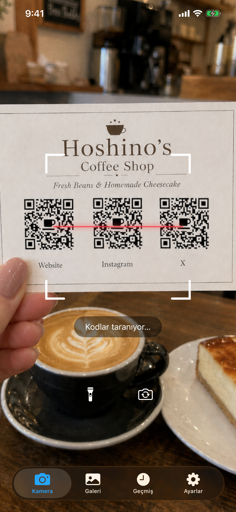
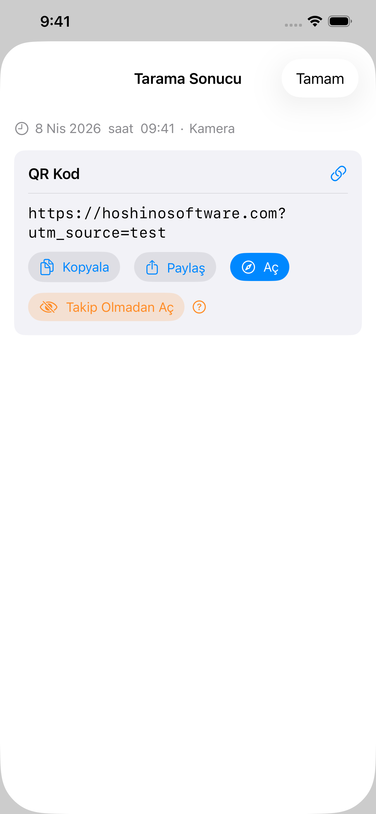
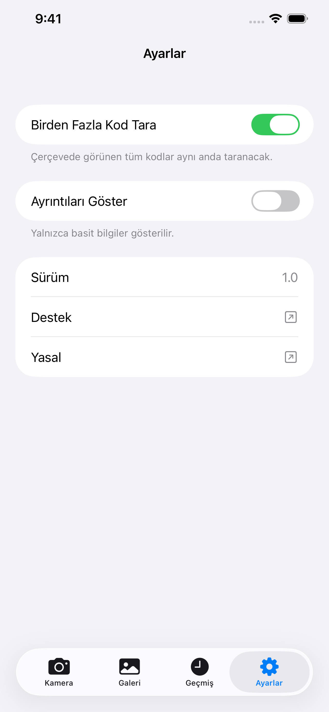

Kod Okuyucu
Kod Okuyucu, iPhone'unuzun kamerası veya fotoğraf kütüphanenizden herhangi bir görüntü kullanarak barkodları ve QR kodlarını tarar. Tamamen çevrimdışı çalışır, buluta hiçbir şey kaydetmez ve asla reklam göstermez.
Download


Kod Okuyucu App Store'dan ücretsiz indirilebilir. Hesap gerekmez. iOS 26 veya sonrasını gerektirir.
Destek
Sorunuz mu var, hata mı buldunuz ya da uygulama hakkında yardıma mı ihtiyacınız var? Bize ulaşın. Her mesajı okuyoruz.
Yazmadan önce
Sık karşılaşılan pek çok sorunun yanıtı aşağıdaki Kılavuz ve SSS bölümünde yer almaktadır. Birkaç hızlı kontrol:
- Kamera çalışmıyor mu? iPhone Ayarları → Gizlilik ve Güvenlik → Kamera yolunu izle → Kod Okuyucu için erişimi etkinleştir.
- Geçmişi bulamıyor musun? Geçmiş sekmesine dokun. Kayıtlar 6 ay boyunca saklanır ve 1.000 girişle sınırlıdır.
- Kod taranmıyor mu? İyi aydınlatma sağla ve kodu sabit tut. Bir resim dosyan varsa Galeri modunu dene.
- Uygulama çöküyor mu? Zorla kapat ve yeniden aç. Sorun devam ederse iPhone modelini ve iOS sürümünü belirterek bize e-posta gönder.
Sık Sorulan Sorular
- İnternet bağlantısı gerekiyor mu?
Hayır. Kod Okuyucu tamamen çevrimdışı çalışır. - Verilerimi topluyor mu?
Hayır. Hiçbir şey herhangi bir yere yüklenmez. Tarama geçmişi yalnızca cihazınızda saklanır. - Tüm fotoğraf kütüphaneme erişiyor mu?
Hayır. Galeri sekmesinde, sistem fotoğraf seçiciyi kullanarak tek bir fotoğraf seçersiniz. Kod Okuyucu kütüphanenize hiçbir zaman erişim almaz. - Çoklu kod modu neden biraz daha uzun sürer?
Kamera, sonucu göstermeden önce görüş alanındaki tüm kodları yakaladığından emin olmak için kısa bir kare penceresi boyunca kod toplar. - Tarama geçmişi ne kadar süre saklanır?
6 aydan eski kayıtlar otomatik olarak kaldırılır. Geçmiş aynı zamanda 1.000 kayıtla da sınırlıdır; yenilere yer açmak için en eskiler kaldırılır. - Neden bir bağlantıya otomatik olarak gitmiyor?
Bu kasıtlıdır. Sahte veya kötü amaçlı QR kodlar otoparklarda, restoran masalarında ve başka yerlerde yaygın olarak bulunur. URL'yi açmadan önce size göstermek, güvenli olup olmadığını doğrulamanıza olanak tanır.
Kılavuz



Kamera
Kamera sekmesi açılır ve hemen taramaya başlar. Telefonunuzu herhangi bir barkod veya QR koda doğrultun, uygulama onu otomatik olarak algılar. Kamera izni gereklidir. Henüz vermediyseniz bir istem görünecektir. Ayarları Aç seçeneğine dokunun ve Kod Okuyucu için Kamera erişimini etkinleştirin.
- El feneri: karanlık ortamları aydınlatmak için el feneri düğmesine dokunun. Yalnızca arka kamerayla kullanılabilir.
- Ön kamera: arka ve ön kamera arasında geçiş yapmak için döndürme düğmesine dokunun. Arka kamera kullanılamadığında (örneğin hasar gördüğünde) kullanışlıdır.
Galeri
Galeri sekmesi, mevcut bir görüntüden kodları taramanıza olanak tanır. Kütüphanenizden herhangi bir görüntü seçmek için Fotoğraf Seç seçeneğine dokunun. Yalnızca seçtiğiniz fotoğraf uygulamayla paylaşılır. Kod Okuyucu tüm fotoğraf kütüphanenize erişim talep etmez.
Bir fotoğraf seçtikten sonra uygulama onu tarar ve sonucu hemen gösterir. Herhangi bir kod bulunamazsa bir uyarı sizi bilgilendirir.
Geçmiş
Her tarama otomatik olarak Geçmiş sekmesine kaydedilir. Taramalar 6 ay boyunca saklanır ve geçmişte en fazla 1.000 kayıt tutulur; limite ulaşıldığında en eskiler otomatik olarak kaldırılır.
- Geçmiş bir taramayı görüntüle: tam sonucu yeniden açmak için herhangi bir satıra dokunun.
- Bir kaydı sil: bir satırı sola kaydırın ve Sil seçeneğine dokunun.
- Tümünü sil: sağ üst köşedeki çöp kutusu simgesine dokunun.
- Kaynak etiketi: her kayıt, Kamera, Galeri veya Paylaşım kaynaklı olup olmadığını gösterir.
Ayarlar
Çoklu Kod Modu
Varsayılan olarak Kod Okuyucu, bir kod bulduğunda durur. Kartvizitler, ürün sayfaları veya yan yana birden fazla kod içeren görüntüler için kullanışlı olan Çoklu Kod Modu'nu etkinleştirerek aynı anda en fazla 5 kod tarayabilirsiniz.
Çoklu kod modu etkinken kamera, tüm görünür kodları toplamak için ilk algılamadan sonra kısa bir süre daha taramaya devam eder. Bu nedenle tek kod moduna göre biraz daha uzun sürer.
Gelişmiş Ayrıntıları Göster
Her tarama sonucunun yanında teknik meta verileri görmek için Gelişmiş Ayrıntıları Göster seçeneğini etkinleştirin: QR sürümü, hata düzeltme düzeyi, maske deseni veya barkod yapısı (başlangıç/bitiş karakterleri, kontrol rakamı). Bu bilgiler Tarama Sonucu sayfasında ve Geçmiş sekmesi satırlarında gösterilir.
Tarama Sonuçları
Bir kod algılandığında, Kod Okuyucu herhangi bir işlem yapmadan önce içeriğini size gösterir. Her zaman önce ham verileri görürsünüz; yanında Kopyala ve Paylaş düğmeleri yer alır. Kod bir URL içeriyorsa (QR kodlarda yaygındır) bir Aç düğmesi belirir. Buna dokunmak, bağlantıyı uygulama içi tarayıcıda değil varsayılan tarayıcınızda açar. Hiçbir tarama verisi toplanmaz.
Kod Okuyucu özel kod türlerini otomatik olarak tanır ve bağlamsal eylemler sunar:
| Kod türü | Yapabilecekleriniz |
|---|---|
| 🌐 URL / Bağlantı | Varsayılan tarayıcınızda aç · Kopyala · Paylaş |
| 📶 Wi-Fi ağı | Doğrudan bağlan · Şifreyi kopyala |
| 👤 Kişi (vCard / MECARD) | Önizlemeyle Kişilere Kaydet |
| 📅 Takvim etkinliği | Takvime Ekle |
| ✉️ E-posta | Önceden doldurulmuş e-posta oluştur |
| 💬 SMS / Mesaj | Mesaj Gönder |
| 📞 Telefon numarası | Ara |
| 📍 Konum / Geo | Haritalarda Aç |
| 📹 FaceTime | FaceTime veya FaceTime Audio |
| ₿ Bitcoin | Adresi kopyala |
| ✈️ Biniş kartı | Aztec / PDF417'den ayrıştırılan uçuş ayrıntıları |
(Ayarlar'da) Gelişmiş Ayrıntıları Göster etkinleştirildiğinde, sonuç sayfasında iki ek bölüm görünür:
- Kodu Çözülmüş Veri: herhangi bir ayrıştırma yapılmadan önce barkodun içinde kodlanmış ham dize.
- Yapı: barkodun teknik dökümü: başlangıç/bitiş karakterleri, kontrol rakamı, koruyucu desenler ve kod türüne göre değişen benzer öğeler.
QR kodlarında ayrıca sürüm numarasını, hata düzeltme düzeyini ve maske desenini gösteren meta veri etiketleri de görünür.
İzleme parametresi tespiti
Bir URL izleme parametreleri içerdiğinde, Kod Okuyucu bir İzleme Olmadan Aç düğmesi gösterir. Bu; UTM etiketlerini, Facebook, Google Ads, Microsoft, TikTok ve diğerlerinden gelen tıklama kimliklerini kapsar. Bağlantıyı bu parametreler kaldırılmış şekilde açmak için düğmeye dokunun. İzlenmeden aynı sayfaya ulaşırsınız.
Başka Bir Uygulamadan Tarama
Bir mesaj, e-posta, belge görüntüleyici veya web tarayıcısı gibi başka herhangi bir uygulamadaki bir fotoğrafta görünen bir kodu, o uygulamadan çıkmadan tarayabilirsiniz.
Paylaş Kullanarak:
- Görüntüyü galerinizde veya herhangi bir uygulamada açın, ardından Paylaş düğmesine dokunun.
- Görünen uygulamalar listesinde Kod Okuyucu'ı bulup dokunun. Göremiyorsanız listenin sonuna kaydırın ve Daha Fazla seçeneğine dokunun.
- Uygulama açılır ve görüntüyü otomatik olarak tarar.
Eylemler Kullanarak:
- Görüntüyü galerinizde veya herhangi bir uygulamada açın, ardından Paylaş düğmesine dokunun.
- Uygulama listesinin altındaki eylemler satırını kaydırın ve Scan for Codes seçeneğine dokunun.
- Uygulama açılır ve görüntüyü otomatik olarak tarar.
Ana Ekran Widget'ı
Ana ekranınıza uygulamaya daha büyük bir kısayol olarak widget ekleyebilirsiniz. Üzerine dokunmak, taramaya hazır şekilde kamerayı doğrudan açar. Widget'lar üç boyutta gelir (küçük, orta, büyük); ana ekran düzeninize en uygun olanı seçebilirsiniz.
- Simgeler titreşmeye başlayana kadar ana ekranınızdaki boş bir alana uzun basın.
- Sol üst köşedeki + düğmesine dokunun.
- Kod Okuyucu'ı arayın.
- Bir boyut seçin ve Widget Ekle seçeneğine dokunun.
- Daha sonra widget'a uzun basarak ve Widget'ı Düzenle seçeneğini seçerek boyutunu değiştirebilirsiniz.
Control Center
Control Center, ekranın sağ üst köşesinden aşağı kaydırdığınızda açılan paneldir. Kilit ekranından veya başka bir uygulama kullanırken bile tek bir dokunuşla kamerayı başlatmak için oraya bir Kod Okuyucu düğmesi ekleyebilirsiniz.
- Control Center'ı açmak için sağ üst köşeden aşağı kaydırın.
- Düzenleme moduna girmek için + düğmesine dokunun.
- Listede Kod Okuyucu'ı bulun ve eklemek için üzerine dokunun.
- Düzenleme modunda sürükleyerek konumunu değiştirebilir ve yeniden boyutlandırabilirsiniz.
Desteklenen Kod Türleri
| Kod | Notlar |
|---|---|
| QR Code | En yaygın 2B kod. URL'ler, Wi-Fi, kişiler ve daha fazlası için kullanılır |
| Micro QR | Sınırlı alana sahip küçük etiketler için QR Code'un kompakt çeşidi |
| Aztec | Biniş kartlarında ve toplu taşıma biletlerinde kullanılır |
| Data Matrix | Üretim, sağlık ve lojistikte yaygındır |
| PDF417 | Sürücü ehliyetlerinde, biniş kartlarında ve kargo etiketlerinde kullanılır |
| Micro PDF417 | İlaç ambalajı gibi küçük ürünler için kompakt PDF417 |
| EAN-8 | Küçük ürünler için kısa perakende barkodu |
| EAN-13 | Dünya genelinde çoğu tüketici ürününde bulunan standart perakende barkodu |
| UPC-E | ABD/Kanada'daki küçük perakende ambalajlarda kullanılan kompakt barkod |
| Code 39 | En eski barkodlardan biri, endüstriyel ortamlarda yaygındır |
| Code 93 | Code 39'un daha yüksek yoğunluklu halefi |
| Code 128 | Lojistik ve nakliyede yaygın olarak kullanılan yüksek yoğunluklu barkod |
| ITF-14 | Oluklu mukavva nakliye kutularına basılan 14 haneli barkod |
| Codabar | Kütüphanelerde, kan bankalarında ve bazı kargo şirketlerinde kullanılır |
| GS1 DataBar | Sebze ve taze gıdalar gibi küçük ürünler için kompakt perakende barkodu |
| GS1 DataBar Expanded | Ağırlık ve son kullanma tarihi gibi ek veriler taşıyan genişletilmiş çeşit |
Desteklenmeyenler:
| Kod | Notlar |
|---|---|
| EAN-2 / EAN-5 (eklentiler) | EAN-13'e eklenen kısa rakam takıları; dergi sayı numaraları ve kitap fiyatlandırması için kullanılır |
| rMQR | Dikdörtgen Micro QR, dar etiketler için tasarlanmış daha yeni bir kompakt QR çeşidi |
| MaxiCode | UPS'in kargo etiketlerinde kullandığı 2B nokta matris kodu |
| SP Code | Konuşma ses verilerini kodlayan Japon erişilebilirlik barkodu |
| Posta Kodları | Ulusal posta hizmetleri tarafından kullanılan 4 durumlu posta barkodları (USPS Intelligent Mail, Royal Mail, Australia Post, Japan Post ve diğerleri) |
| Özel uygulama kodları | Yalnızca yayımlayan uygulamanın tarayabildiği özel görsel kodlar |
Demo Kodlar
Bu kodları kamerayla doğrudan bu ekrandan tarayın veya ekran görüntüsü alıp Galeri sekmesini kullanın.
 | QR Code İzleme parametreli URL https://hoshinosoftware.com?utm_source=review&utm_campaign=demo |
 | QR Code Wi-Fi ağı WIFI:S:example-wifi;T:WPA;P:example-password;; |
 | QR Code E-posta mailto:test@example.com |
 | QR Code Kişi (vCard) BEGIN:VCARD VERSION:3.0 N:Last;First FN:First Last ORG:Company TITLE:Job Title ADR:;;Street;City;CA;90401;USA TEL;WORK;VOICE: TEL;CELL:+1234567890123 TEL;FAX: EMAIL;WORK;INTERNET:example@example.com URL:https://example.com END:VCARD |
 | Micro QR Küçük etiketler için kompakt QR HELLO |
 | Aztec (Full) Toplu taşıma / biniş kartları AZTEC-DEMO-CODE |
 | Aztec (Compact) Küçük etiketler için kompakt çeşit AZTEC-DEMO-CODE |
 | Data Matrix (Square) Üretim / sağlık DATAMATRIX |
 | Data Matrix (Rectangular) Dar etiketler için dikdörtgen çeşit DATAMATRIX |
 | PDF417 Kimlik belgeleri / kargo etiketleri PDF417 SAMPLE DATA |
 | Micro PDF417 Küçük ürünler için kompakt PDF417 MICROPDF417 SAMPLE DATA |
 | EAN-13 Perakende barkodu 5901234123457 |
 | UPC-E Kompakt perakende barkodu (ABD/Kanada) 01234565 |
 | Code 128 Lojistik / nakliye CODE-128-DEMO |
 | ITF-14 Nakliye kutusu barkodu 12345678901231 |
 | GS1 DataBar Küçük ürünler için kompakt barkod 0112345678901231 |
Yasal
Gizlilik Politikası
Son Güncelleme: Nisan 2026
Giriş
Kod Okuyucu basit bir ilke üzerine inşa edilmiştir: verileriniz size aittir. Bu Gizlilik Politikası, uygulamanın hangi bilgilere eriştiğini ve bu bilgilerin nasıl işlendiğini açıklar.
Kamera Erişimi
Uygulama, barkodları ve QR kodlarını gerçek zamanlı olarak taramak için cihazınızın kamerasını kullanır. Kamera görüntüsü yalnızca cihazınızda işlenir. Hiçbir görüntü veya video karesi saklanmaz, yüklenmez veya paylaşılmaz.
Tarama Geçmişi
Tarama sonuçları, Apple'ın cihaz içi depolama teknolojisi kullanılarak cihazınızda yerel olarak kaydedilir. Bu veriler cihazınızı asla terk etmez ve hiçbir sunucuya iletilmez. Tarama geçmişinizi istediğiniz zaman uygulama içinden silebilirsiniz.
İnternet Bağlantısı Gerekmez
Kod Okuyucu tamamen çevrimdışı çalışır. Uygulama hiçbir ağ isteği göndermez. Verileriniz cihazınızı asla terk etmez.
Veri Toplama Yok
Hiçbir kişisel bilgiyi toplamaz, depolamaz veya işlemeyiz. Uygulama herhangi bir hesap veya kayıt gerektirmez.
Üçüncü Taraf Hizmetler
Kod Okuyucu herhangi bir üçüncü taraf analitik, reklam veya izleme hizmeti kullanmaz. Hiçbir veri üçüncü taraflarla paylaşılmaz.
Çocukların Gizliliği
Kişisel veri toplanmadığı için Kod Okuyucu her yaştan kullanıcı için güvenlidir ve COPPA ile dünya genelindeki benzer düzenlemelere uygundur.
Bu Politikadaki Değişiklikler
Bu Gizlilik Politikasını zaman zaman güncelleyebiliriz. Değişiklikler yayınlandıktan hemen sonra yürürlüğe girer. Bu sayfayı periyodik olarak gözden geçirmenizi öneririz.
Bize Ulaşın
Bu Gizlilik Politikasına ilişkin sorularınız için: support [at] hoshinosoftware [dot] com
Kullanım Koşulları
Son Güncelleme: Nisan 2026
Koşulların Kabulü
Kod Okuyucu'yu indirerek veya kullanarak bu Kullanım Koşullarına bağlı olmayı kabul edersiniz. Kabul etmiyorsanız lütfen uygulamayı kullanmayın.
Lisans
Hoshino Software, bu koşullar ve Apple'ın App Store Kullanım Koşulları çerçevesinde Kod Okuyucu'yu Apple cihazlarınızda kullanmanız için kişisel, devredilemez ve münhasır olmayan bir lisans vermektedir.
İzin Verilen Kullanım
Kod Okuyucu'yu yalnızca yasal amaçlarla kullanabilirsiniz. Uygulamayı yürürlükteki yasa veya yönetmelikleri ihlal eden herhangi bir şekilde kullanmamayı kabul edersiniz.
Garanti Yok
Kod Okuyucu, açık veya zımni herhangi bir garanti olmaksızın "olduğu gibi" sağlanmaktadır. Uygulamanın hatasız, kesintisiz veya belirli bir amaca uygun olacağını garanti etmiyoruz.
Sorumluluk Sınırlaması
Yürürlükteki yasaların izin verdiği azami ölçüde Hoshino Software, Kod Okuyucu'nun kullanımından veya kullanılamamasından kaynaklanan doğrudan, dolaylı, arızi, özel veya sonuç olarak ortaya çıkan zararlardan sorumlu tutulamaz.
Bu Koşullardaki Değişiklikler
Bu Kullanım Koşullarını zaman zaman güncelleyebiliriz. Değişikliklerin yayınlanmasından sonra uygulamayı kullanmaya devam etmeniz, güncellenen koşulları kabul ettiğiniz anlamına gelir.
Geçerli Hukuk
Bu koşullar, Hoshino Software'in faaliyet gösterdiği yargı bölgesinin yasalarına tabidir.
Bize Ulaşın
Bu Kullanım Koşullarına ilişkin sorularınız için: support [at] hoshinosoftware [dot] com